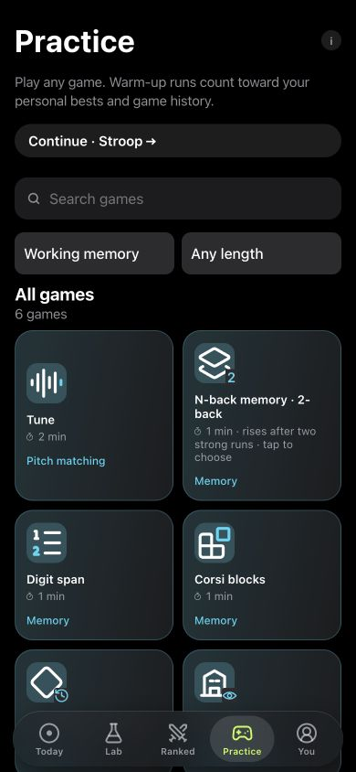

Inside LabRats
Choose a specific memory demand.
The app’s Working memory filter includes the named games in this guide. Digit span, Corsi blocks and N-back each have their own instructions and results.
Start with one that fits your question. You can add another later without combining their units into an undefined “memory gain”.
How to choose a memory test in the app
- Open Practice and use the Working memory filter.
- Choose Digit span for digits, Corsi blocks for positions or N-back for updating a recent sequence.
- Keep the format consistent when you repeat the task.
- Revisit saved runs in You, or select the game in a personal experiment.
Three tasks, three different questions
| Task | What you do | What to follow |
|---|---|---|
| Digit span | Repeat a sequence of digits | Sequence length, with forward and reverse results kept distinct |
| Corsi blocks | Repeat a sequence of spatial positions | Spatial sequence length and errors |
| N-back | Judge whether an item matches one presented earlier | Detected targets and false alarms |
A longer digit sequence and fewer N-back false alarms are different observations. Combining them into one label would hide which task changed.
If your question is about distraction or holding back a response, the attention tasks make those demands more explicit.
Why a single high score is not a baseline
A lucky sequence, a new strategy or a misunderstanding can move one result. Early runs also include learning the controls. Start by becoming comfortable with the instructions, then collect results across several days.
Keep the task format stable. A forward sequence asks you to repeat an order; a reverse sequence also asks you to rearrange it. A harder N-back setting changes the comparison again. Use compatible runs when looking for a trend.
A simple memory-tracking routine
- Choose one memory task for the question you care about.
- Read its instructions and practise until the interaction feels familiar.
- Play at a similar point in your day, on the same device.
- Record context such as sleep, interruptions or a changed routine.
- Review the series, including mistakes and missing days.
You can keep another task alongside it, but decide what each contributes. More games do not automatically make an answer clearer if the formats and conditions keep changing.
A nootropic journal or peptide journal can keep what you recorded beside these task results. Keep the memory format stable whichever context you track.
What an improvement means
If you hold a longer sequence, that is an improvement on the sequence task under those conditions. It does not by itself establish a change in everyday memory, intelligence or a health condition. Getting familiar with the game is one possible explanation.
LabRats lets you revisit saved runs and include selected games in a personal experiment. Keep the original question narrow: “How did my spatial sequence results differ across these days?” is a more readable question than “Did my whole memory improve?”